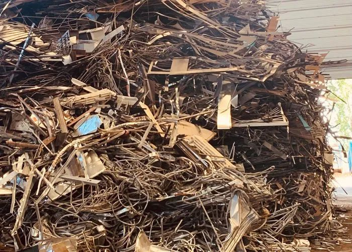
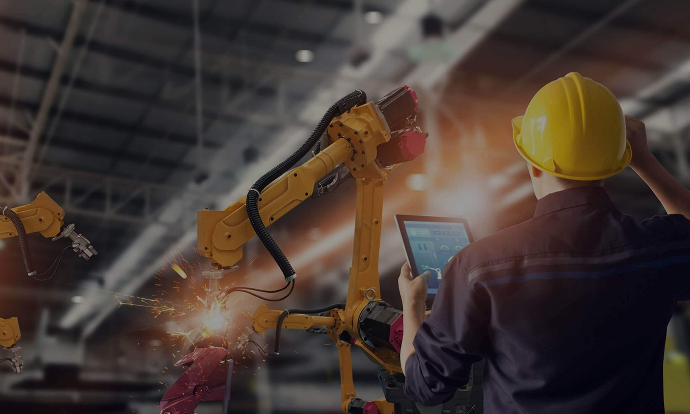
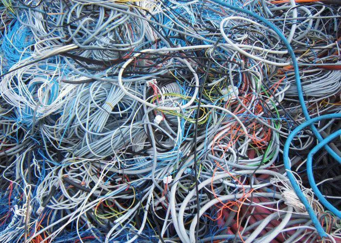

01 / 06
Recupero metalli ferrosi di scarto da aziende
Ritiro e recupero di metalli ferrosi e non ferrosi.
Anteprima riservata
Il nuovo sito di Rottami Garzon
umbra® studio web

Verona Recupero metalli ferrosi di scarto da aziende
Rottami Garzon in numeri
Mezzi propri, personale formato, documenti in ordine. Dalla chiamata al formulario.

Ritiro e recupero di metalli ferrosi e non ferrosi.

Ritiro e recupero di metalli ferrosi e non ferrosi.
Cassoni e container posizionati dove servono e ritirati pieni, con trasporto all'impianto.
Ricezione, selezione e avvio a recupero dei materiali, perché tornino a essere risorse.
Intermediazione: troviamo l'impianto giusto per ogni rifiuto, con tutti i documenti.
Gestione dei rifiuti pericolosi con mezzi e imballaggi a norma, dalla classificazione allo smaltimento.
Procedura
Ci dite cosa serve, dove e con quali tempi.
Mezzi, percorsi e autorizzazioni.
Ritiro con mezzi autorizzati.
All'impianto di destinazione, con formulario.
Ciò che è recuperabile torna materia.
Trascinate per scorrere.
Conformità
Lavora con noi
Mandateci il vostro curriculum: lo leggiamo tutto, e vi richiamiamo.
Contatti
Enti, aziende e privati: indicateci il servizio e la zona, vi rispondiamo con tempi e preventivo.
Anteprima riservata · preparata per Rottami Garzon
Abbiamo usato le foto e le informazioni già pubbliche dell'azienda. L'anteprima è gratuita: se vi piace, acconto del 25% e saldo quando il sito è online, con rimborso completo entro 30 giorni dalla messa online. Hosting, dominio, privacy e cookie li gestiamo noi.
umbra® studio web · umbragency.it